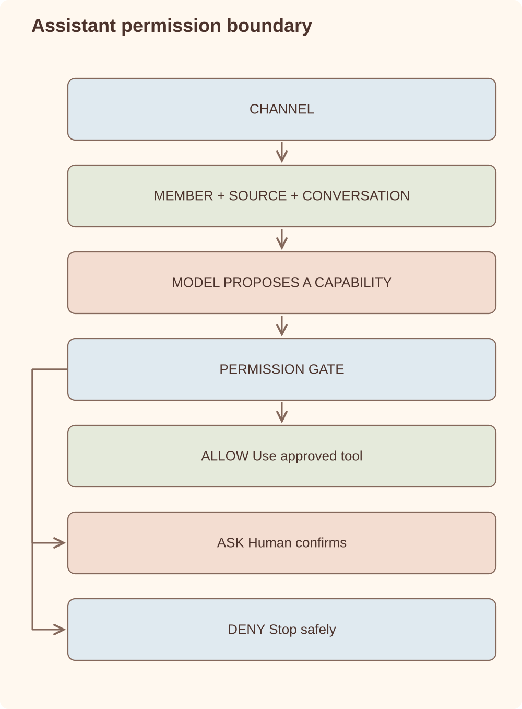

Architecture case study
AI Assistant
I am building a self-hosted family assistant whose knowledge, documents and skills remain useful when I change the model, channel or application around them.
TypeScript / Node.js / provider-neutral model runtime / SQLite working state / channel adapters / Markdown and versioned JSON / permission-gated capabilities
Overview
I built this because useful family context was scattered across chats, calendars, email and files. Repeating it to a generic assistant did not create durable knowledge or a system the household could inspect and own.
The project started as a conversational tool runner and gradually became a local-first family assistant. One installation serves the household, but each person keeps a stable identity and attributed actions. I wanted approved knowledge, documents and skills to be shareable without pretending that a messaging account is the person or the source of truth.
I treat channels and model providers as adapters around the same runtime. The current implementation supports the Claude Agent SDK and an OpenAI-compatible tool loop behind the same permission and session boundaries. I do not silently fall back between providers. If an adapter cannot read a PDF, it refuses the request before sending anything to the model.
Requirements
- Run locally on a developer-controlled machine, with private workspace data outside the Git repository.
- Serve one household with stable, attributed members and shared approved information.
- Support hosted and local models through explicit provider adapters and configured fallback routes.
- Execute tools only through deterministic authorization, not through prompt instruction alone.
- Support CLI, private Telegram, email ingress and calendar-aware workflows without losing conversation continuity.
- Produce an auditable execution history for tool decisions and confirmations.
- Accept concurrent messages durably and recover unfinished work after model limits, process restarts or infrastructure failure.
- Keep permanent knowledge, original documents and approved interpretations human-readable and recoverable.
- Keep embeddings, indexes and dashboards replaceable; preserve operational records with verified backups and exports.
- Let a family propose and improve readable skills through conversation, with versioning, checks, approval and rollback.
Architecture
Every request gets context, crosses a permission boundary and leaves a record.

I only acknowledge work after it has been persisted. From there it can be retried, resumed after a restart and traced back to the member, conversation and source that created it. The interaction contract keeps those facts stable without pushing channel-specific behavior into the agent runtime.
The model sees only enabled capabilities. Every tool passes through scope and risk checks plus optional human confirmation; unknown tools fail closed. File operations also enforce lexical and real-path confinement. I keep permanent information in Markdown, versioned JSON and original files, while databases hold working state that I can rebuild.
Key components
Interaction contract
Every channel supplies the same member, source, conversation, attachment and capability context to the runtime.
Family identity
External channel identities map to stable household members. Conversations stay separate and actions remain attributable.
Model providers
Provider adapters own the complete tool-using turn. Fallback is limited to configured routes; it does not authorize an arbitrary provider change or expand tool permissions.
Permission engine
src/permissions.ts evaluates tool metadata, asks for human confirmation when required and logs allow/deny decisions.
Safe file layer
src/files.ts blocks traversal and symlink escapes. Dedicated handlers then narrow writes to their own notes, knowledge, document, memory or skill locations.
Durable intake
src/durable-jobs.ts persists Telegram messages, PDFs and email before processing. It deduplicates message IDs, recovers interrupted jobs and applies bounded retry with subscription-reset awareness.
Capability catalogue
Capabilities group tools with the settings, storage, workers and health checks they require. Configuration can disable them; only the permission gate can authorize them.
Versioned skills
Conversational changes create inspectable proposals. Checks and human approval activate an exact immutable version; rollback preserves history.
Document pipeline
Original evidence is retained alongside a validated, versioned JSON record with provenance, ambiguities and correction history. Integrations consume that portable boundary.
Telegram state
src/telegram-state.ts persists sessions and reminders, serializes each conversation and lets confirmation replies unblock an active tool call. Shared scheduled work executes once before delivery to multiple recipients.
Portable storage
Markdown, original files and versioned JSON hold permanent information. Search indexes and dashboard views are replaceable projections. Lifecycle-bearing runtime records require their own verified backups and exports.
Configuration boundary
A validated, secret-free configuration describes household identity, providers, storage and enabled capabilities. Migration and activation are explicit.
Recovery
SQLite stores runtime and lifecycle state. Versioned, checksummed JSON exports provide a portable recovery route, but original documents alone do not replace backups of operational records. Restore must be verified against a new empty database.
Implementation detail
I did not want “provider-neutral” to mean a thin text-completion interface that stopped being useful as soon as the model called a tool. The abstraction covers the complete agent turn, including tool continuation and declared capabilities:
export interface AgentRuntime {
readonly providerId: string;
execute(request: AgentRequest): Promise<AgentResult>;
capabilities(): ModelCapabilities;
}
if (attachments.some(isPdf)) {
throw new Error(`${providerId} cannot read PDF documents.`);
}The OpenAI-compatible runtime converts each tool's Zod schema to JSON Schema, validates returned arguments before calling the handler, limits the number of turns, aborts on timeout and refuses unavailable tools. I keep provider sessions behind application-owned IDs, so channel records do not inherit a provider's identity model.
For documents, I use content-addressed extraction revisions. A revision ID hashes the original bytes, extractor identity, extractor version and normalized payload. Approval re-hashes the source, rejects unresolved ambiguity and supersedes the previous approved revision:
revisionId = sha256({
sourceSha256,
extractor,
extractorVersion,
facts,
references,
amounts,
dates,
ambiguities
});
approve only if currentSourceHash === sourceSha256
&& ambiguities.length === 0;I use the same pattern for skills. Proposed Markdown becomes an immutable semantic version with its content hash, requested capabilities, diff and deterministic include/exclude assertions. Activation revalidates the exact bytes and records who approved them. A skill can request an existing capability, but it cannot grant itself one.
Interesting engineering problems
- Policy-based tool execution. The model generates intent, never authority. Capability switches narrow the available tools, channel policy narrows them again, and scope/risk metadata plus confirmation and audit remain the final authorization layer.
- Prompt injection boundary. The dangerous boundary is the moment text becomes action. Unknown or unavailable tools are denied, returned arguments are schema-validated and monitored external content receives a deliberately restricted capability set.
- Knowledge is not workflow state. Human-readable Markdown remains the source for narrative context, while SQLite stores lifecycle-bearing objects that need filtering, status transitions and due dates. Facts in either layer carry explicit provenance.
- Identity without data silos. Members have separate authenticated conversations and attributed actions, while approved household knowledge remains shared according to visibility rules.
- Durable asynchronous UX. Ingress and execution are separate. The assistant acknowledges accepted work only after persistence, serializes each conversation, retries recoverable failures and avoids asking the user to resend a request.
- One computation, many recipients. Shared scheduled routines execute once and fan out the same result, avoiding duplicate model runs and inconsistent summaries.
- Portable state without dual authority. SQLite supports queries and transitions during execution, while versioned JSON exports carry provenance, ownership, event history and a checksum. Restore verifies the export and rebuilds a fresh projection.
Trade-offs
| Decision | Trade-off | Why |
|---|---|---|
| Provider adapters behind one complete-turn contract | More adapter code, consistent tools and permissions across hosted and local models | I keep provider-specific sessions and response formats outside channels and durable household records. |
| Markdown knowledge before vector search | Less fuzzy retrieval, better debuggability | For early usage, grep-able source-of-truth files were more reliable than opaque embeddings. |
| One household, attributed members | More identity and visibility rules, less duplicate context | Approved information can be shared without losing who requested or changed something. |
| Risk-based confirmation rather than confirmation for every write | Routine automation stays usable, sensitive actions still pause | Scope describes where a tool acts; independently assigned risk determines whether a human must approve it. |
| Markdown plus SQLite | Two storage models to maintain, clearer semantics and queries | Knowledge, evidence and operational lifecycle have different access patterns and should not be forced into one format. |
| Authenticated chat for action approval | Monitored email is observational rather than autonomous | Untrusted message content can propose an action but cannot directly modify state or contact an external recipient. |
| Runtime database with portable snapshots | More export and restore machinery, no database becomes the only copy | Operational queries stay fast while checksummed JSON preserves a provider-neutral recovery path. |
Where it is now
- CLI, private Telegram and allow-listed email intake working with durable session resume and persistent request queuing.
- Stable member identities implemented across channels, attachments and scheduled work.
- Permission gate, safe file layer and append-only audit log implemented in code.
- Google Calendar, Telegram-first email drafts, structured reminders, accounting intake, document organisation and skill-loading tools integrated behind the same authorization path.
- Queryable operational objects and provenance-aware facts separate active commitments from narrative knowledge.
- Concurrent requests, subscription limits and restarts no longer require users to resend accepted work.
- Shared scheduled routines execute once and fan out to all intended recipients.
- Security and reliability tests cover configuration, permissions, safe files, calendar, email, durable jobs, operational state and Telegram state.
- Claude Agent SDK and OpenAI-compatible provider loops implemented behind the same permission-gated capability registry.
- The codebase includes authenticated web interactions and a household dashboard with read-only projections and narrowly defined commands, alongside CLI, Telegram and email.
- Universal document records preserve original evidence, extraction revisions, approval and correction history.
- Conversational skills can be proposed, checked, approved, versioned and rolled back without changing code-level permissions.
Lessons
- A prompt is not a security boundary. Permission checks have to live in code.
- The model can suggest an action, but the runtime decides whether it is allowed.
- Good folder structure and readable household context solved more of the memory problem than vector search would have.
- Audit logs and session recovery became necessary much earlier than I expected.
- Acknowledgment must mean durable acceptance, not merely that a webhook or poller saw a message.
- Personal-assistant memory needs provenance and lifecycle, not just better retrieval.
What I would build next
The current installation is still the proving environment. The interaction contract, stable member identity, provider adapters, explicit migrations, portable restore path and versioned skill lifecycle are now in place. I still want capability compatibility to fail during configuration rather than relying on adapter-level rejection at execution time.
After that, I would focus on packaging and access: run the same application and durable data through Docker, then validate local models and ARM64 hardware. I do not want any of those delivery formats to create a second data model or weaken the household boundary.